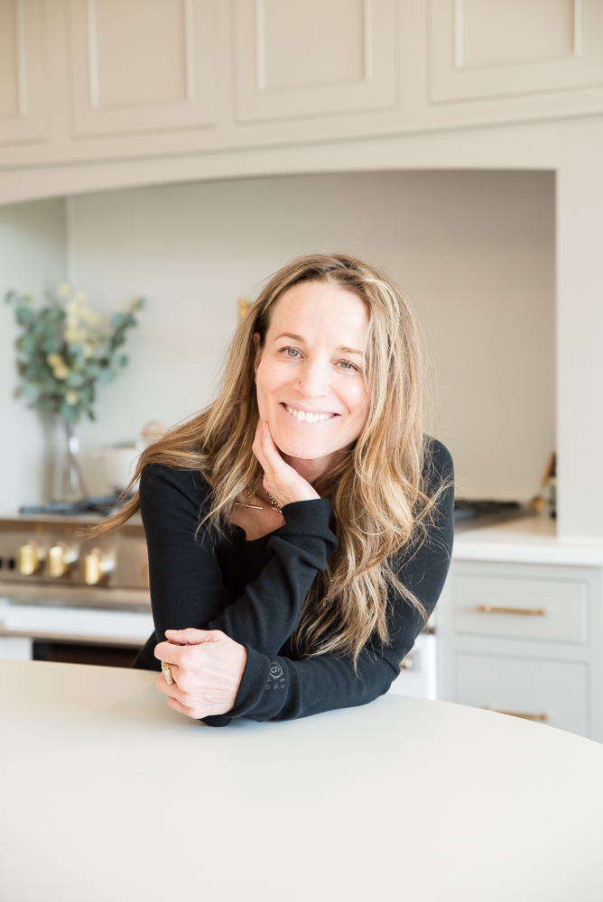

About
I’ve spent more than 25 years helping people make meaningful changes in their lives.
My background is intentionally diverse. I’m an herbalist, nutritionist, massage therapist, holistic practitioner, and professional organizer. I’ve also spent nearly 15 years working in fashion, including fashion consulting and retail. I’m currently completing my training in craniosacral therapy and polarity therapy.
Over the years, my work has taken me in many directions, but there has always been a common thread: helping people create more space in their lives, both inside and out, which can make room for greater harmony, ease, and new possibilities.
I’ve come to see how closely our inner lives are connected to the environments we create around us. Some of my work is practical — helping you create a home or wardrobe that functions well and feels like you. Other work is more embodied, inviting you to slow down and listen to what your body is telling you.
Through all of my experiences, I’ve cultivated a daily practice of conscious presence as a way of being. It is at the heart of how I work and move through my life, and something I bring to every part of my practice.
Different approaches. One intention: helping you reconnect with yourself and find your way.